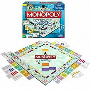
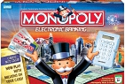

El juego de mesa mas vendido de la historia
hola ada
holaaaaa
Un juego creado con la funcion de servir como herramientas para enseñar las teorias acerca de la justicia social economica extraidas del estudio tutilado Progreso y Miseria de Henry George
Comercializado por primera vez en el año de 1936
A lo largo de 80 años el juego, ha sufrido una notable evolucion. Sus multiples ediciones y sus tantas versiones han dado pie a que se cambiara desde la caja que lo contiene hasta los elementos que lo componen. Logrando asi, mantenerse como el favorito a traves de las decadas.
Con los años la finalidad del juego cambio para solo disfrutar de un buen rato negociando propiedades y hasta haciendo uso de medios electgronicos para todas las transacciones que requiere el juego.
